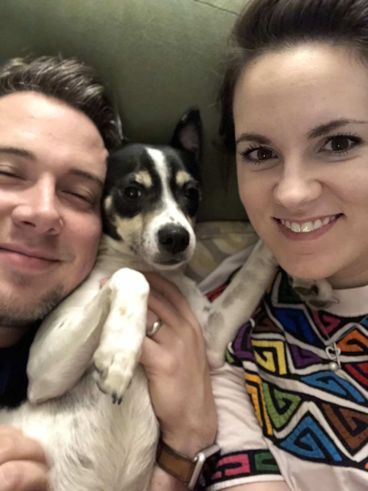
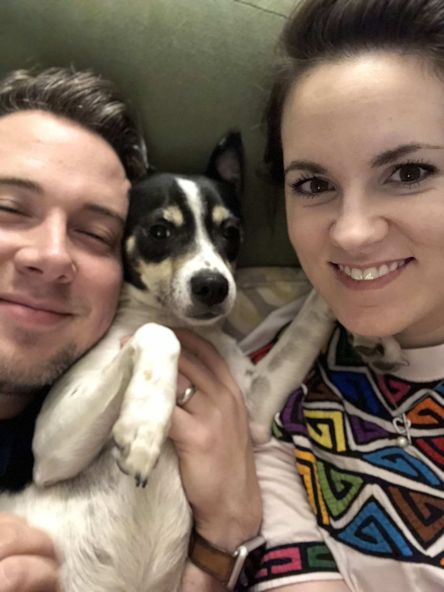

Hi, I'm Kate!

I'm a new mom, "recovering" public school teacher,
and wife to an incredibly talented and handsome husband.
I have an obsession with new hobbies; my current ones
being crochet, learning French, and baking.
Since we're currently in the middle of a pandemic,
I don't get out much. But if I did, you'd likely find me
taking walks around my local park, dining with friends,
or shopping for yarn at Hobby Lobby.
 
